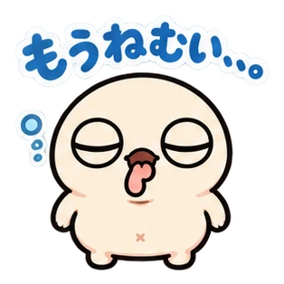

本日も、
だいたい元気。
へんてこ仲間
21キャラクター
21キャラクター
目が合ったら、
もう友だち。
ぬるっと、あなたの毎日へ。
01 / ABOUT OUR WORLD
そのクセまで、
好きになる。
まんまるな目。
予想できないかたち。
ちょっとだけ、気持ちわるい。
ぷるっとしたり、ぺたっとしたり、耳がのびたり。
ぬるまるシリーズは、ひと目では説明しきれない仲間たち。
よく見るほど気になる、そんな「へん」を集めました。
あなたの「なんか好き」は、どの子？
02 / MEET THE FRIENDS
へんてこなかま図鑑↙
見た目も、気分も、みんなそれぞれ。
気になる子をタップして、もっと仲良く。
なかまたちを読み込んでいます…
まだ見つかりませんでした。別の言葉でさがしてみてね。
03 / LITTLE STORIES
小さな事件。
大きなリアクション。
ぬるまるたちの、ゆるい4コマ。
たいしたことは、起きません。
ぬるまるのショート漫画 / オリジナルストーリー
04 / NURUMARU MINI THEATER
ぬるっとミニシアター✳
ちょこっと動くと、もっとへん。
音なしでも楽しめるショート作品。
SHORT ANIMATION『おやつ会議』
再生して、おやつ会議をのぞいてみよう。
TO BE CONTINUED…
この世界は、
まだまだ増殖中。
なかまは、これからも少しずつ。
いつか1,000体の「なんか好き」に出会える場所へ。
新しいキャラクターは、準備ができたら図鑑に仲間入り。
TAKE US WITH YOU
トークにも、
ぬるっとおじゃま。
「ありがとう」も、「ちょっと待って」も。
文字だけでは足りない気分を、なかまたちにおまかせ。
各キャラクターの詳細からも作品へ移動できます。
準備中の作品は、公開後にリンクを追加します。
こんな日の、こんな気持ちに。
今日はもう、がんばった。

既読21:00
それな。いっしょに休も。
※会話はイメージです。